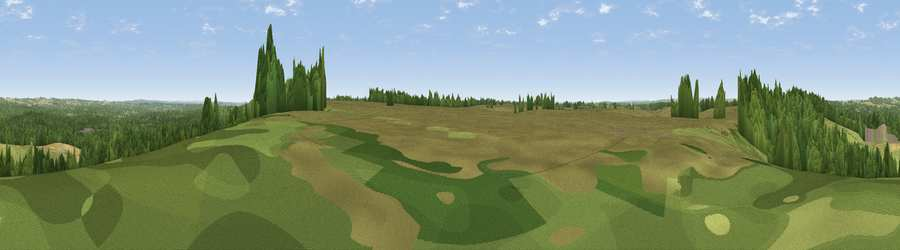

Rushy Flat
#31505 in England · top 39% of its area beats it · near LoverThe view, rendered

A 360° render of this exact spot computed from the terrain model, tree cover and land cover — summer colours, afternoon light, calibrated against photographs of famous viewpoints. Real trees, hedges and buildings will differ in detail.
The panorama
Grey silhouette: terrain skyline in each direction (720 bearings, Earth curvature and refraction included). Dashed green: skyline with trees (+15 m) and buildings (+8 m) as obstacles. Blue strip: how far the ground is visible on each bearing.
Where the view opens
Wedge length = distance to the farthest visible ground on that bearing (vegetation-aware). Rings at 10, 25 and 50 km.
What fills the view
51% woodland · 42% grassland · 6% cropland
Angular shares of the visible panorama (visual magnitude), not map area. Landscape diversity 0.39 (0–1 Shannon).
Key numbers
More beautiful places nearby
The staircase of upgrades: each row has a higher view potential than everything closer. Driving times are estimates from straight-line distance, calibrated against real road routing — check an actual route before setting out.
| Place | Direction | Drive | Score |
|---|---|---|---|
| Viewpoint near Bramshaw | ESE · 5 km | ~10 min | 46.6 |
| Viewpoint near West Grimstead | N · 7 km | ~14 min | 62.7 |
| Viewpoint near Martin | W · 18 km | ~30 min | 64.6 |
| Viewpoint near Cranborne | W · 18 km | ~31 min | 65.0 |
| Viewpoint near Sparsholt | ENE · 22 km | ~36 min | 66.9 |
| Trow Down | W · 25 km | ~41 min | 67.5 |
| Viewpoint near Bulford | N · 26 km | ~41 min | 70.3 |
| Monk's Down | W · 29 km | ~45 min | 74.4 |
50.95455, -1.68917 · source: osm peak · position refined by local search. Computed location — check access rights before visiting.